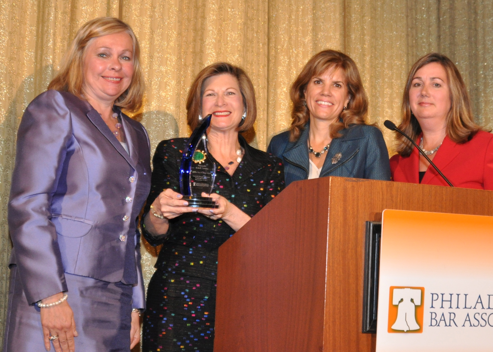

Judge Anne Lazarus – experience, ethics, and service
Over the last 28 years as both a trial and appellate judge, Anne E. Lazarus has become a widely respected leader in the legal community. She was elected to the Superior Court in 2009, the only Democrat to win a statewide election. Since then she has authored over 3,000 memoranda and opinions and has presided over Superior Court Sessions across Pennsylvania.
She is considered a leading voice for judicial ethics; she served as Chair of the State Conference of Trial Judges' Ethics Committee for six years, was a member and Chair of the Judicial Conduct Board, and was appointed by the Chief Justice of the Supreme Court to chair a committee charged with reviewing and rewriting the Canons of Judicial Conduct.
She has been honored by the Pennsylvania Bar Association for her work in pro bono services to those in need, and with Anne X. Alpern Awares for excellence in the law and mentorship of women. She was awarded the Philadelphia Bar Association's Sandra Day O'Connor Award, which recognizes prominence and the highest degree of professional excellence in the legal profession to those who openly and visibly use their position and stature in the community to mentor, promote, and advance other women lawyers. When running for appellate office, she has been found "Highly Recommended" by both the Pennsylvania Bar Association and the Philadelphia Bar Association.
Judge Lazarus mentors young lawyers and law students through her work as an adjunct professor at The Beasley School of Law, Temple University, the Brandeis Law Society, the National Institute of Trail Advocacy, and particularly enjoys her time teaching Civics to 10th graders through the ACE program in Philadelphia.
She was originally appointed to the Common Pleas bench by Governor Casey in 1991, and won her election and a retention to the court before ascending to the Superior Court. She is particularly proud of her years in the Orphans' Court where she dealt with elder abuse cases and made sure justice did not elude the older, most vulnerable segments of our community.
Judge Lazarus is a graduate of the State University of New York at Stonybrook, as well as the Beasley School of Law at Temple University where she received both her J.D. and LL.M. degrees. Before her election to the bench she served as Legal Counsel to the Orphans' Court, and practiced law at Ballard, Spahr, LLP, in Philadelphia.
Judge Lazarus lives in Philadelphia with her husband, Mitchell Klevan, Esq. Together, they have two wonderful accomplished daughters and sons-in-law, and just became the proud grandparents of their first grandchild.